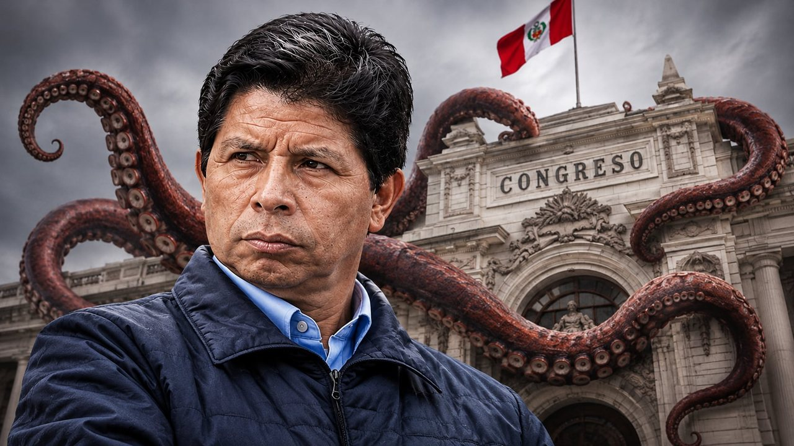
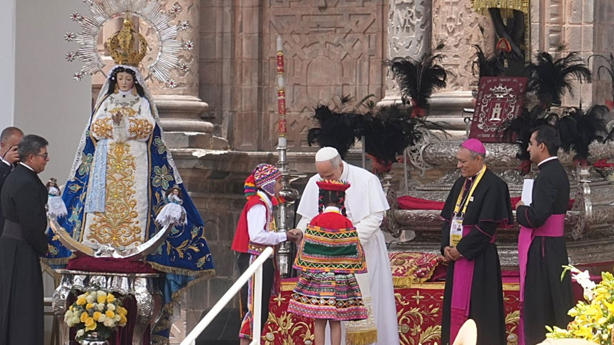
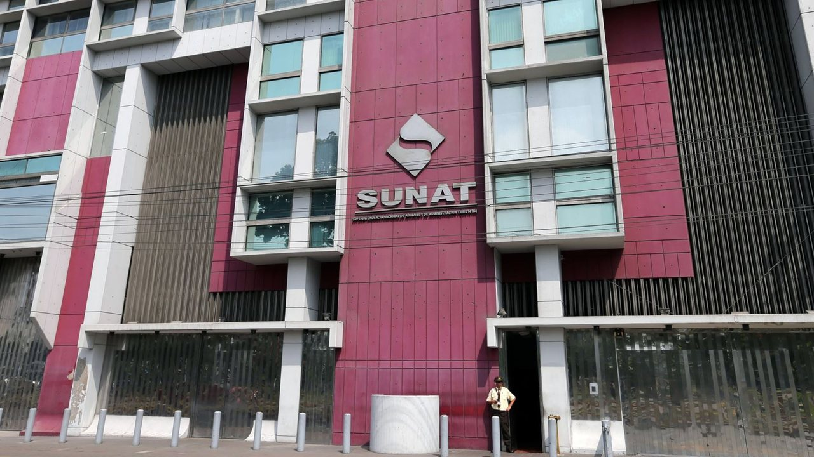

Piura: Diresa realiza jornada de control larvario en más de 15 sectores de Castilla Las actividades se desarrollaron en los asentamientos humanos Almirante Miguel Grau, Sagrado Corazón de Jesús, Casa Huerto Nuevo Amanecer, otros. Personal de salud realizó el control larvario en el distrito de Castilla.









Piura: Diresa realiza jornada de control larvario en más de 15 sectores de Castilla Las actividades se desarrollaron en los asentamientos humanos Almirante Miguel Grau, Sagrado Corazón de Jesús, Casa Huerto Nuevo Amanecer, otros. Personal de salud realizó el control larvario en el distrito de Castilla.
Papa León catorce se despide de Perú: “Que estén siempre llenos de fe y esperanza” En su último mensaje desde la sede donde se alojó durante su visita al Perú, el sumo pontífice pidió a los fieles mantener viva la fe y la esperanza.
Un nuevo temblor de magnitud 4.2 fue registrado en el Perú la mañana de este lunes 16 de noviembre, según el último reporte del Instituto Geofísico del Perú ( IGP ).
El papa León catorce cumplirá este lunes 16 de noviembre su última jornada en el Perú antes de regresar a Roma. Para esta jornada, la Policía Nacional del Perú (policía nacional) estableció rutas para el desplazamiento de la comitiva papal entre Surco y el Callao, además de un recorrido alternativo ante posibles imprevistos.
El papa León catorce cumple este lunes 16 de noviembre con su última jornada de trabajo luego de haber recorrido Lima, Callao, Lambayeque, Cusco y Ucayali para llevar mensajes de fe y esperanza.
de este lunes 16 de noviembre, con una intensidad de III en Aija. Un sismo de magnitud 4.2 se registró la mañana de este lunes 16 de noviembre de 2026 en la región Áncash, según informó el Instituto Geofísico del Perú (IGP), a través del Centro Sismológico Nacional (Censis).
Los pasillos de la casa de reposo de las Hermanitas de los Ancianos Desamparados del Callao guardan historias de adultos mayores llenas de resiliencia, esperanza y una fe tan fuerte como sus ganas de seguir adelante.
Lita Pezo participó en la histórica misa que el papa León catorce ofreció este domingo en Pucallpa, en la región Ucayali. Ahora, suma a su trayectoria la experiencia de haber cantado ante el papa León catorce durante su visita a Pucallpa.
El papa León catorce cumple este lunes 16 de noviembre con su última jornada de trabajo luego de haber recorrido Lima, Callao, Lambayeque, Cusco y Ucayali para llevar mensajes de fe y esperanza. Sigue en esta nota el minuto a minuto de todas sus actividades.
Cada edición dura menos de dos minutos. En la web tienes el resumen de cada historia y el enlace directo al medio original para leerla completa.
Conoce Olfatecho →